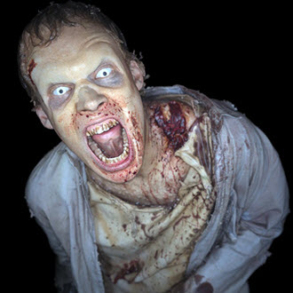

闪光摄影效果
本简短教程介绍了如何模拟闪光摄影效果，它可用于增强僵尸侵袭的震撼渲染效果！
照明
- 创建区域光（设置为“四边形”(Quad)）。定位并旋转该灯光，使其放置在渲染摄影机前面。在大纲视图中，使用鼠标中键将区域光拖动到摄影机上。这会将其分组到摄影机，以确保移动摄影机时，灯光会随之移动。将灯光的“曝光”(Exposure)增加到 4 左右。
| quad_light 放置在摄影机前面 |
扩散(Spread)
- 我们可以在 quad_light 中使用“扩散”(Spread)，使灯光更多地聚焦在僵尸的面部。在本例中，此值已减小为 0.2。
| _扩散(Spread)_：1（默认值） | _扩散(Spread)_：0.2 |
相比默认的高_“扩散”(Spread)_值，“扩散”(Spread)值越低，产生的噪波可能会越多，因此请谨慎使用低值。值越低，避免阴影噪波所需的灯光采样数越多。
有一种用于控制灯光在场景中的衰减的替代方法，那就是向灯光添加 light_decay 过滤器。
大气体积
我们可以使用 atmosphere_volume 为场景添加一丝恐怖气氛。
打开_“渲染设置”(Render Settings)_，然后转到_“Arnold 渲染器”(Arnold Renderer)_选项卡中的_“环境”(Environment)_。右键单击“大气”(Atmosphere)右侧的
 图标，然后选择“创建 aiAtmosphereVolume”(Create aiAtmosphereVolume)。
图标，然后选择“创建 aiAtmosphereVolume”(Create aiAtmosphereVolume)。将 atmosphere_volume 的 density 属性略微增加到 0.005 左右。
|  |  |
| 未使用 atmosphere_volume | 使用 atmosphere_volume |
有关如何创建闪光摄影效果的教程到此结束。祝您好梦哟！